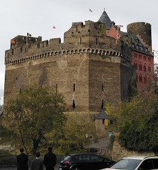
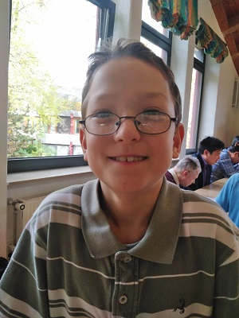
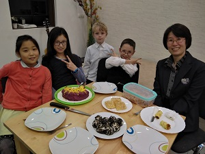
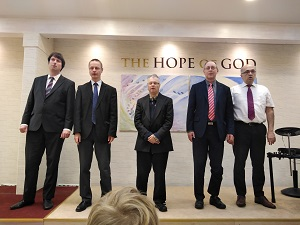

The Stefan's
Welcome to the Stefan's. I will like to tell you something today about the Stefan Family. Anyway, this is their unofficial website. Stefan is a German and the wife, Deborah is from South Korea. They have two wonderful sons and both are from the Old Testament: Joshua and Daniel.

Hello.
Below are the information about each member of the family.
Stefan und Deborah.
The two are devoted Christians. Stefan, like Paul is a lawyer who was arrested by God to be a shepherd. I know Paul was going to Damascus when God caught him. But where was Stefan Going when he was arrested? Well, God didnt come down to blind him, but He used His servant, Deborah. After, God said, "Well done my daughter for bringing him to me. For your reward....."
Joshua
He is a young man full of energy for God. As you can see, he is playing his instrument to produce the sound effect that brought the wall of Jericho down. He believes in miracles because of what God has done for him.
Daniel
The last is prophet Daniel. He does not fear anything, including lions. Sometimes, people do not understand him, but God does. He will one day be a great shepherd for the Kingdom of God.
Friends und Partners
 Get In Touch
If you are not satisfied with the information we have given you, then come to UBF on Sunday. God bless you.
CONTACT ME